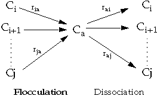

Flocculation is the process whereby fines obtained from the precipitation process aggregate to form bigger particles referred to as flocs. This process is modeled by a set of two kinetic reactions to allow reversibility (partial or total) between aggregation of the fines into flocs and dissociation of the flocs into fines.
Let denote the concentration of the fines coming from component i and the concentration of the flocs. Once precipitation occurs, the aggregation rate of the fines i into flocs a is modeled by:
| [Eq. 240.1] |
where
| is the flocculation rate coefficient of the fines | |
| and | is the dissociation rate coefficient of the flocs. |
The range of components that precipitate and the flocs component are specified by the ASPFLOC keyword. This keyword is used in conjunction with the ASPFLRT keyword that specifies rates and . This process is depicted in the figure below.
In the case where the asphaltene is seen as single pure component, this flocculation reduces to two kinetic reactions only.

The flocculation-Dissociation process can generate significant changes in the composition, which may result in un-physical behavior if data input is not carefully set up. Given that the flocs component is a result of the flocculation process, it is expected that the flocs properties (molar weight, critical properties, and other EOS parameters) to be some average values of the components that precipitate. These average values should also take into account the flocculation rates to have the right weight contribution of the different components that precipitate.
You should provide flocculation properties that are consistent with the components that precipitate. A helpful tool to provide an estimate of the flocculation properties would be a PVT package with a grouping capability that derives the properties of a pseudo-component from its parts.
As the composition of the oil can be changed by the flocculation and/or deposition process(es), the oil/gas densities will change, and therefore the pressure too.